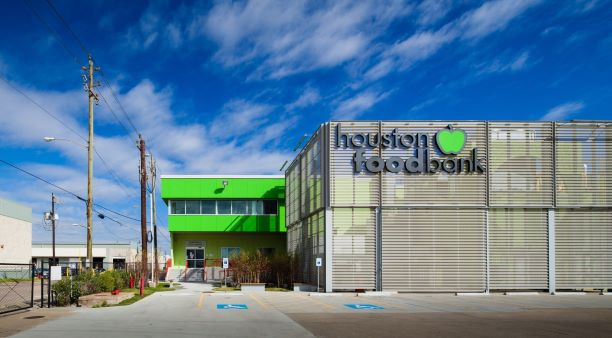
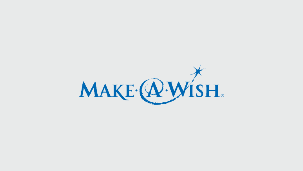
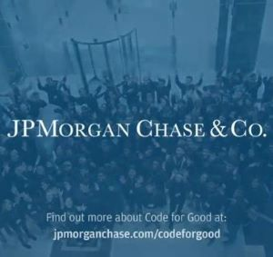

We receive so much from our community so we need to give back too. Here are some examples of my contributions and how I will make more.

JP Morgan has made great efforts to connect non-profit organizations with people who are looking to make a change. This hackathon promotes community service and change in the form of projects that are aimed at a specific problem of a community or a group. This event will allow be to use my skills to solve real life problems and understand how to work together with different organizations.

I have volunteered at the Houston Food Bank on numerous occasions. Houston Food Bank is wonderful organization that not only distributes food to the needy, but also attempts to connect people together so that they can address the problem of why they are hungry and what they need to do to get out of this unfortunate situation. I have worked with them in packaging food items for distribution and helping in cleaning the facility at the end of shifts.

Make-A-Wish has made a name by helping the unfortunate fulfil their cherished dreams. Many celebrities and famous people have fulfilled the wishes of their fans through this charity and I would love to be a part of bringing happiness to another soul.